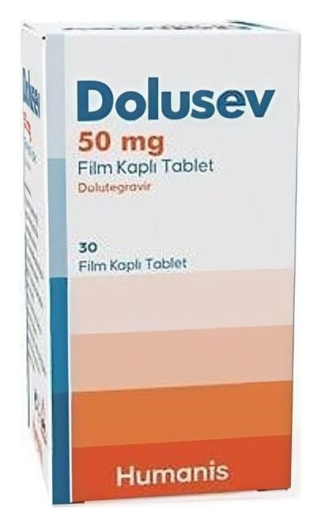

Dolusev 50 mg Film Kaplı Tablet (30 Adet)

Ne için kullanılır
KT · Bölüm 1DOLUSEV film kaplı tabletler; 30 tablet içeren, 60 ml HDPE (yüksek yoğunluklu polietilen) şişe ve PP (polipropilen), çocuklara emniyetli, sızdırmaz kapaktan oluşan birincil ambalaj malzemeleri kullanılarak sunulmaktadır. Bunlar sarı renkte, yuvarlak ve bikonveks tabletlerdir. Kullanma talimatında yer alan ambalaj boyutlarının hepsi piyasada mevcut olmayabilir. DOLUSEV; tenofovir disoproksil fumarat ve emtrisitabin ile kombinasyon halinde kullanılmak üzere İnsan Bağışıklık Yetmezliği Virüsü (HIV) ile enfekte yetişkinler, adolesanlar ve en az 14 kg ağırlığındaki 6 yaş veya üzerindeki çocukların tedavisinde endikedir.
DOLUSEV, etkin madde olarak dolutegravir içermektedir. Dolutegravir, integraz inhibitörleri (INI’ler) olarak adlandırılan bir antiretroviral ilaç grubuna aittir.
DOLUSEV, HIV enfeksiyonunu tamamen iyileştirmez; yalnızca vücudunuzdaki virüs miktarını azaltır ve onu düşük bir düzeyde tutar. Aynı zamanda kanınızdaki CD4 hücre sayımını da arttırmaktadır. CD4 hücreleri, vücudunuzun enfeksiyonla savaşmasına yardımcı olan bir beyaz kan hücresi tipidir.
DOLUSEV ile tedavi olan herkes tedaviye aynı şekilde yanıt vermemektedir. Doktorunuz tedavinizin etkililiğini takip edecektir.
DOLUSEV, tenofovir disoproksil fumarat ve emtrisitabin ile birlikte kullanılır (kombinasyon tedavisi). HIV enfeksiyonunuzun kontrol edilmesi ve hastalığınızın daha kötü bir hale gelmemesi için doktorunuz size aksini söylemediği müddetçe tüm ilaçlarınızı almaya devam etmelisiniz.